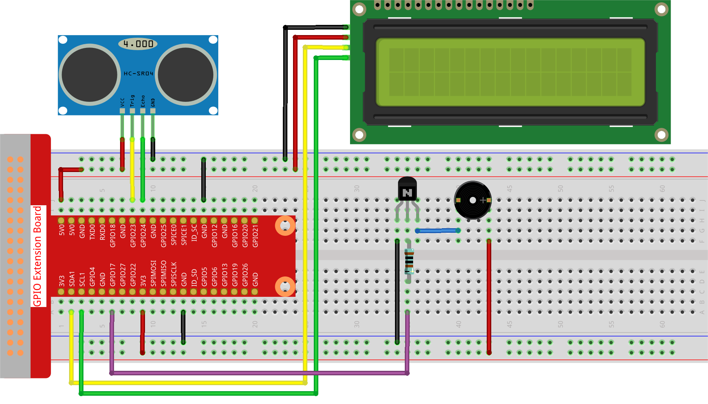

Note
Bonjour et bienvenue dans la communauté SunFounder des passionnés de Raspberry Pi, Arduino et ESP32 sur Facebook ! Plongez au cœur du Raspberry Pi, de l’Arduino et de l’ESP32 aux côtés d’autres passionnés.
Pourquoi nous rejoindre ?
Support d’experts : Résolvez les problèmes post-vente et les défis techniques grâce à l’aide de notre communauté et de notre équipe.
Apprendre et partager : Échangez des astuces et des tutoriels pour perfectionner vos compétences.
Avant-premières exclusives : Accédez en avant-première aux annonces de nouveaux produits et aux aperçus.
Réductions spéciales : Profitez de remises exclusives sur nos derniers produits.
Promotions festives et concours : Participez à des tirages au sort et à des promotions spéciales.
üëâ Pr√™t √† explorer et cr√©er avec nous ? Cliquez sur [Ici] et rejoignez-nous d√®s aujourd‚Äôhui !
3.1.3 Alarme de Recul
Introduction
Dans ce projet, nous allons utiliser un écran LCD, un buzzer et des capteurs ultrasoniques pour créer un système d’assistance au stationnement en marche arrière. Nous pourrons le placer sur un véhicule télécommandé pour simuler le processus réel de recul d’une voiture dans un garage.
Composants Nécessaires
Pour ce projet, nous aurons besoin des composants suivants :

Schéma de Câblage
Le capteur ultrasonique détecte la distance entre lui-même et l’obstacle, qui sera affichée sur l’écran LCD sous forme de valeur numérique. Simultanément, le capteur active le buzzer, émettant des sons d’alerte de fréquences différentes selon la valeur de la distance.
T-Board Name |
physical |
wiringPi |
BCM |
GPIO23 |
Pin 16 |
4 |
23 |
GPIO24 |
Pin 18 |
5 |
24 |
GPIO17 |
Pin 11 |
0 |
17 |
SDA1 |
Pin 3 |
||
SCL1 |
Pin 5 |

Procédures Expérimentales
Étape 1 : Montez le circuit.
Étape 2 : Changez le répertoire.
cd ~/davinci-kit-for-raspberry-pi/python-pi5
Étape 3 : Exécutez le programme.
sudo python3 3.1.3_ReversingAlarm.py
Lorsque le programme s’exécute, le module de capteur ultrasonique détecte la distance jusqu’à l’obstacle, affiche l’information sur l’écran LCD1602 et émet des tonalités d’avertissement dont la fréquence varie en fonction de la distance détectée.
Note
Si vous recevez l’erreur
FileNotFoundError: [Errno 2] No such file or directory: '/dev/i2c-1', veuillez consulter I2C Configuration pour activer l’I2C.Si vous recevez l’erreur
ModuleNotFoundError: No module named 'smbus2', exécutez la commandesudo pip3 install smbus2.Si l’erreur
OSError: [Errno 121] Remote I/O errorapparaît, cela signifie que le module est mal câblé ou qu’il est défectueux.Si le code et le câblage sont corrects, mais que l’écran LCD n’affiche toujours pas de contenu, vous pouvez tourner le potentiomètre à l’arrière pour augmenter le contraste.
Avertissement
Si un message d’erreur du type RuntimeError: Cannot determine SOC peripheral base address apparaît, veuillez vous référer à Si gpiozero ne fonctionne pas..
Code
Note
Vous pouvez modifier/réinitialiser/copier/exécuter/arrêter le code ci-dessous. Cependant, avant cela, assurez-vous d’être dans le répertoire source comme davinci-kit-for-raspberry-pi/python-pi5. Après modification, vous pouvez exécuter le code pour observer les résultats.
#!/usr/bin/env python3
import LCD1602
import time
from gpiozero import DistanceSensor, Buzzer
# Initialisation du capteur ultrasonique avec les broches GPIO
sensor = DistanceSensor(echo=24, trigger=23) # Broche Echo : GPIO 24, Broche Trigger : GPIO 23
# Initialisation du buzzer connecté à la broche GPIO 17
buzzer = Buzzer(17)
def lcdsetup():
# Initialisation de l'écran LCD avec l'adresse I2C et activation du rétroéclairage
LCD1602.init(0x27, 1) # 0x27 est l'adresse I2C de l'écran LCD
LCD1602.clear() # Effacer l'écran LCD
# Affichage des messages de démarrage sur l'écran LCD
LCD1602.write(0, 0, 'Ultrasonic Starting')
LCD1602.write(1, 1, 'By SunFounder')
time.sleep(2) # Attendre 2 secondes
def distance():
# Calculer et retourner la distance mesurée par le capteur
dis = sensor.distance * 100 # Convertir la distance en centimètres
print('Distance: {:.2f} cm'.format(dis)) # Afficher la distance avec deux décimales
time.sleep(0.3) # Attendre 0,3 seconde avant la prochaine mesure
return dis
def loop():
# Mesurer la distance en continu et mettre à jour l'écran LCD et le buzzer
while True:
dis = distance() # Obtenir la distance actuelle
# Afficher la distance et gérer les alertes en fonction de celle-ci
if dis > 400: # Vérifier si la distance est hors de portée
LCD1602.clear()
LCD1602.write(0, 0, 'Error')
LCD1602.write(3, 1, 'Out of range')
time.sleep(0.5)
else:
# Afficher la distance actuelle sur l'écran LCD
LCD1602.clear()
LCD1602.write(0, 0, 'Distance is')
LCD1602.write(5, 1, str(round(dis, 2)) + ' cm')
# Ajuster la fréquence du buzzer en fonction de la distance
if dis >= 50:
time.sleep(0.5)
elif 20 < dis < 50:
# Distance moyenne : fréquence moyenne du buzzer
for _ in range(2):
buzzer.on()
time.sleep(0.05)
buzzer.off()
time.sleep(0.2)
elif dis <= 20:
# Distance proche : fréquence élevée du buzzer
for _ in range(5):
buzzer.on()
time.sleep(0.05)
buzzer.off()
time.sleep(0.05)
try:
lcdsetup() # Configurer l'écran LCD
loop() # Démarrer la boucle de mesure
except KeyboardInterrupt:
# Éteindre le buzzer et effacer l'écran LCD en cas d'interruption par l'utilisateur (ex. Ctrl+C)
buzzer.off()
LCD1602.clear()
Explication du Code
Ce script utilise plusieurs bibliothèques pour son bon fonctionnement. La bibliothèque
LCD1602gère l’affichage de l’écran LCD, tandis quetimefournit les fonctions liées au temps. La bibliothèquegpiozeroest essentielle pour les interactions avec les broches GPIO du Raspberry Pi, en particulier pour contrôler le capteur de distance et le buzzer.#!/usr/bin/env python3 import LCD1602 import time from gpiozero import DistanceSensor, Buzzer
Le capteur ultrasonique est configuré avec ses broches Echo et Trigger connectées respectivement aux broches GPIO 24 et 23. De plus, un buzzer est connecté à la broche GPIO 17.
# Initialisation du capteur ultrasonique avec les broches GPIO sensor = DistanceSensor(echo=24, trigger=23) # Broche Echo : GPIO 24, Broche Trigger : GPIO 23 # Initialisation du buzzer connecté à la broche GPIO 17 buzzer = Buzzer(17)
L’initialisation de l’écran LCD consiste à le configurer, à effacer l’affichage et à afficher un message de démarrage.
def lcdsetup(): # Initialisation de l'écran LCD avec l'adresse I2C et activation du rétroéclairage LCD1602.init(0x27, 1) # 0x27 est l'adresse I2C de l'écran LCD LCD1602.clear() # Effacer l'écran LCD # Affichage des messages de démarrage sur l'écran LCD LCD1602.write(0, 0, 'Ultrasonic Starting') LCD1602.write(1, 1, 'By SunFounder') time.sleep(2) # Attendre 2 secondes
La fonction
distancecalcule la distance mesurée par le capteur ultrasonique et l’affiche, puis retourne la valeur en centimètres.def distance(): # Calculer et retourner la distance mesurée par le capteur dis = sensor.distance * 100 # Convertir la distance en centimètres print('Distance: {:.2f} cm'.format(dis)) # Afficher la distance avec deux décimales time.sleep(0.3) # Attendre 0,3 seconde avant la prochaine mesure return dis
La boucle principale mesure continuellement la distance, met à jour l’écran LCD et le buzzer. Elle gère les différentes plages de distance avec des actions spécifiques, comme l’affichage de messages d’erreur ou la variation de la fréquence du buzzer en fonction de la distance mesurée.
def loop(): # Mesurer continuellement la distance et mettre à jour l'écran LCD et le buzzer while True: dis = distance() # Obtenir la distance actuelle # Afficher la distance et gérer les alertes en fonction de celle-ci if dis > 400: # Vérifier si la distance est hors de portée LCD1602.clear() LCD1602.write(0, 0, 'Error') LCD1602.write(3, 1, 'Out of range') time.sleep(0.5) else: # Afficher la distance actuelle sur l'écran LCD LCD1602.clear() LCD1602.write(0, 0, 'Distance is') LCD1602.write(5, 1, str(round(dis, 2)) + ' cm') # Ajuster la fréquence du buzzer en fonction de la distance if dis >= 50: time.sleep(0.5) elif 20 < dis < 50: # Distance moyenne : fréquence moyenne du buzzer for _ in range(2): buzzer.on() time.sleep(0.05) buzzer.off() time.sleep(0.2) elif dis <= 20: # Distance proche : fréquence élevée du buzzer for _ in range(5): buzzer.on() time.sleep(0.05) buzzer.off() time.sleep(0.05)
Lors de l’exécution, le script initialise l’écran LCD et entre dans la boucle principale. Il peut être interrompu par une commande clavier (Ctrl+C), ce qui éteint le buzzer et efface l’écran LCD.
try: lcdsetup() # Configurer l'écran LCD loop() # Démarrer la boucle de mesure except KeyboardInterrupt: # Éteindre le buzzer et effacer l'écran LCD en cas d'interruption par l'utilisateur (ex. Ctrl+C) buzzer.off() LCD1602.clear()